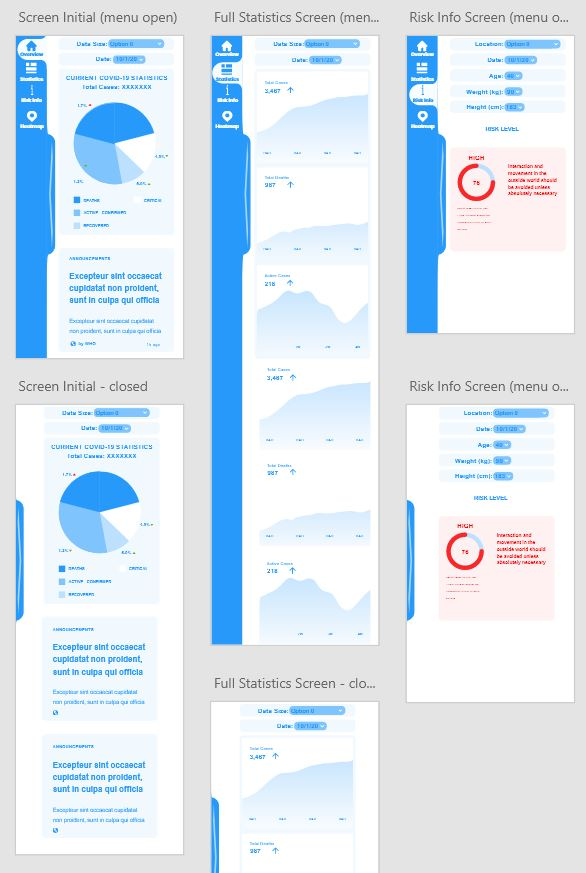
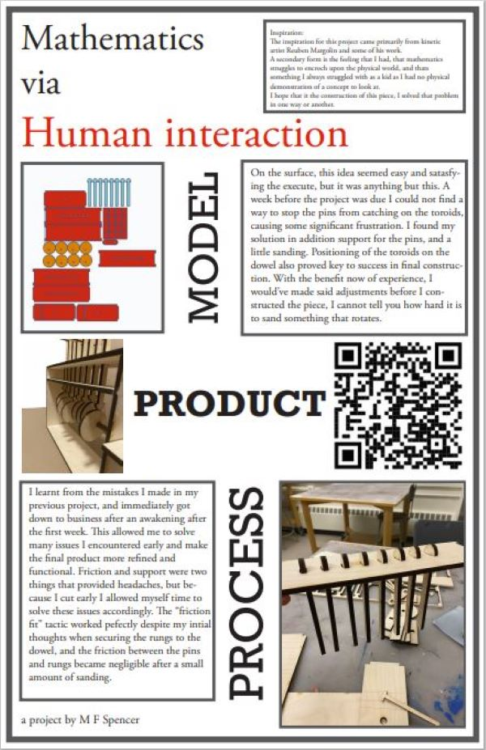
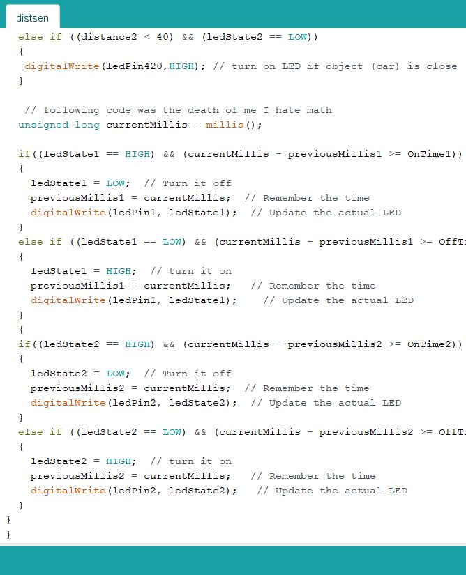

Portfolio
This is some of the work I've completed at Northeastern over the past 1.5 years, through both my engineering and design coursework. My academic strengths lie in problem solving and the design process to develop effective and efficient solutions coming from a STEM background. After transferring into a more design and client oriented stream, I am combining these two strengths to provide more complete and refined solutions to problems I am presented with in the classroom, and hopefully soon in the real world.

COVID-19 Tracer
UI-UX Design
Mathematics via Human interaction
Engineering